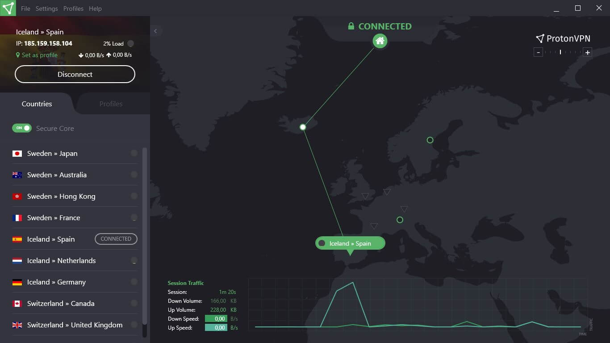

2022 年 - VPN 評價
前言
以下為站長的評分，評分準則為以下 :
- 私隱安全
- 速度
- 隱定
- 安全
1. SurfShark VPN

推薦: 自從知道佢同 Nord 有路開始，唔敢講啦。
安全: 自從知道佢同 Nord 有路開始，唔敢講啦。
速度: ⭐⭐⭐
隱定: ⭐⭐
Q: 我有冇用過？
A: 有
Q: 用左幾耐？
A: 兩年幾
更多資料
- 同 NordVPN 已經合左併。
https://www.techradar.com/news/surfshark-founder-reveals-ties-to-nordvpn-and-tesonet - 之前幫 TVB 賣廣告
單單係呢二樣野已經夠哂理由唔用佢。
2. Nord VPN

推薦: None
安全: None
速度: None
隱定: None
Q: 我有冇用過？
A: 冇，個底花到咁，唔會考慮用。
更多資料
- 成撚日俾人 Hack，大量 zombie AC 流出。
https://www.cnet.com/tech/services-and-software/nordvpn-user-accounts-were-compromised-and-passwords-exposed-report-says/
單單係呢點已經可以唔洗考慮用，
仲用佢既真係自求多福。
3. Proton VPN
推薦: ⭐⭐⭐⭐
安全: ⭐⭐⭐⭐⭐
速度: None
隱定: None
Q: 我有冇用過？
A: 有
Q: 用左幾耐？
A: 我係用佢個 Free Version，正常上到網，速度唔算差 (以免費版黎講)，用左年幾。
更多資料
呢間本身都係有出 Email 服務 ProtonMail
係以加密服務為主，安全性問題都唔太擔心。
另外，ProtonMail 的隱私報告顯示，他們在 2020 年間收到了 3,572 宗來自瑞士執法機關的用戶查詢，當中 3,017 宗有提供協助。
https://lihkg.com/thread/2691521/page/1
4. Mullvad VPN

推薦: ⭐⭐⭐⭐⭐
安全: ⭐⭐⭐⭐⭐
速度: ⭐⭐⭐⭐⭐
隱定: ⭐⭐⭐⭐⭐
Q: 我有冇用過？
A: 有
Q: 暫時係第4個月，感覺非常好。
首先，呢一款真係可以話係 VPN 入既 既清泉。
no-log policy
唔會留任何記錄。
https://mullvad.net/en/help/no-logging-data-policy/
唔洗 Email 唔洗電話
Mullvad 係會即時幫你 Gen 一個 ID 出黎，
呢個 ID 就係你既 登入帳號既野。

支持多種俾錢方法
官方仲話希望大家用 Anonymous 俾錢方法, eg Bitcoin。
https://mullvad.net/en/blog/2019/7/24/cash-still-king/

零 Tracker
喺 Tacker 方面係零。
Server
雖然佢小 Server，但因為佢係 self-owned 先咁。
https://mullvad.net/en/servers/
總結
VPN 只屌 Mullvad VPN 或者 Proton VPN。